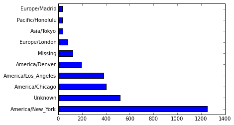

IPython QtConsole 3.2.0
Python 3.4.3 |Anaconda 2.3.0 (64-bit)| (default, Mar 6 2015, 12:06:10) [MSC v.1600 64 bit (AMD64)]
Type "copyright", "credits" or "license" for more information.
IPython 3.2.0 -- An enhanced Interactive Python.
Anaconda is brought to you by Continuum Analytics.
Please check out: http://continuum.io/thanks and https://anaconda.org
? -> Introduction and overview of IPython's features.
%quickref -> Quick reference.
help -> Python's own help system.
object? -> Details about 'object', use 'object??' for extra details.
%guiref -> A brief reference about the graphical user interface.
In [1]: pwd
Out[1]: 'C:\\Users\\jbslon01'
In [2]: cd Documents/
C:\Users\jbslon01\Documents
In [3]: cd IPythonProjects/git/pydata-book/
C:\Users\jbslon01\Documents\IPythonProjects\git\pydata-book
In [4]: %load script1.py
In [5]: # %load script1.py
...: import json
...: from pandas import DataFrame, Series
...: import pandas as pd
...:
...: path = 'ch02/usagov_bitly_data2012-03-16-1331923249.txt'
...: records = [json.loads(line) for line in open(path, encoding='utf-8-sig')]
...:
...: frame = DataFrame(records)
...: clean_tz = frame['tz'].fillna('Missing')
...: clean_tz[clean_tz == ''] = 'Unknown'
...: tz_counts = clean_tz.value_counts()
...: tz_counts[:10].plot(kind='barh', rot=0)
...:
Out[5]: <matplotlib.axes._subplots.AxesSubplot at 0x862cba8>

In [6]: